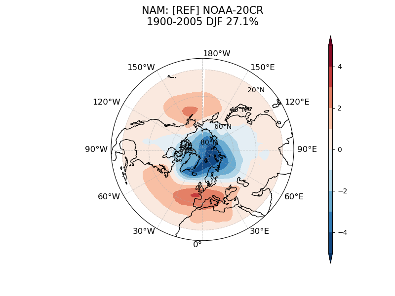
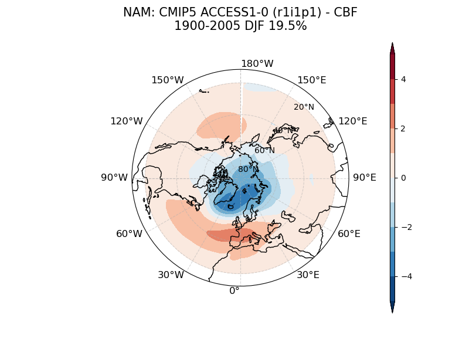
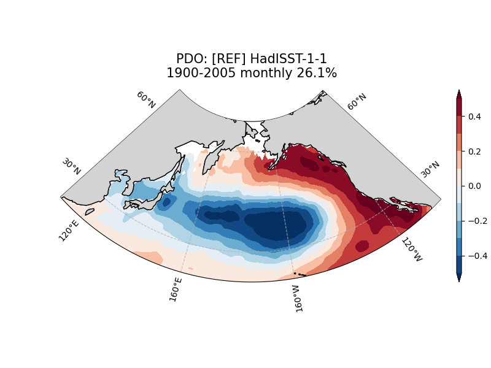
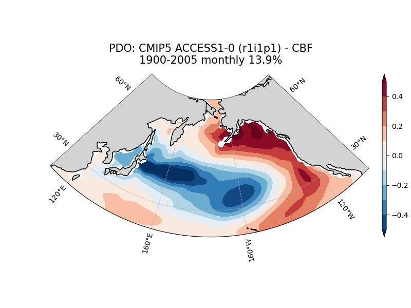
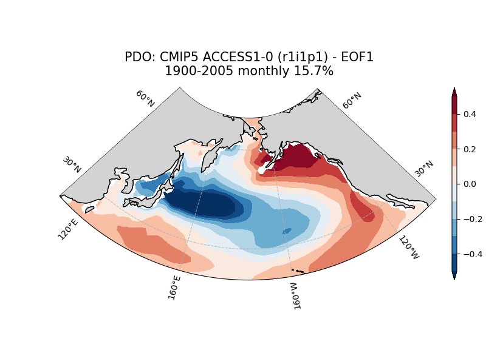
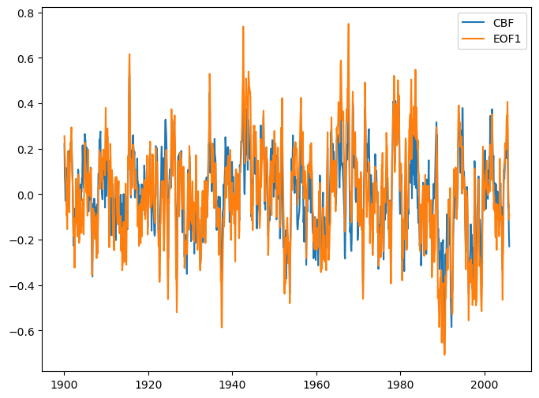
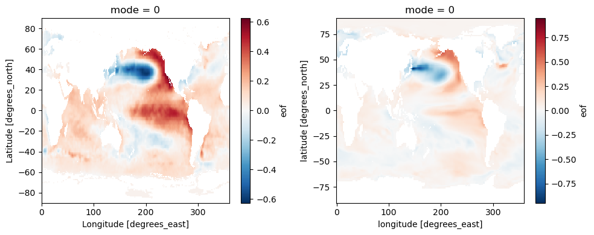
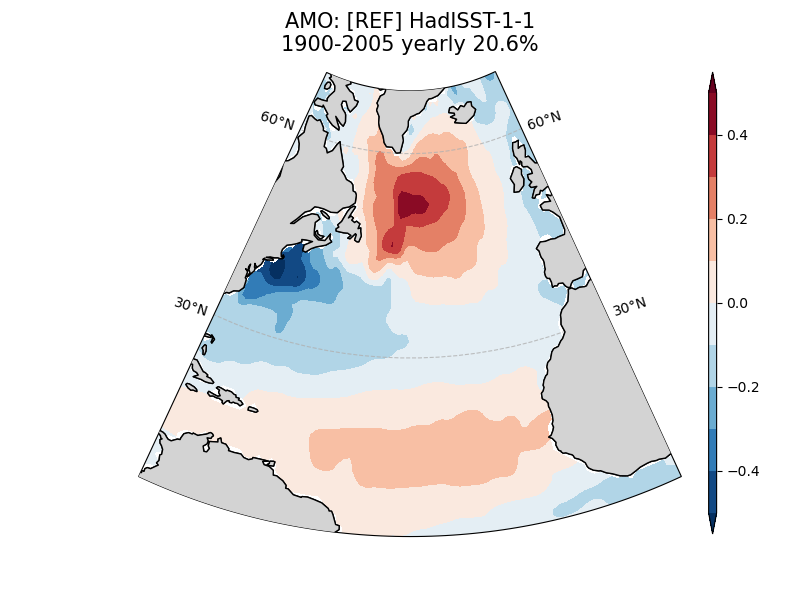
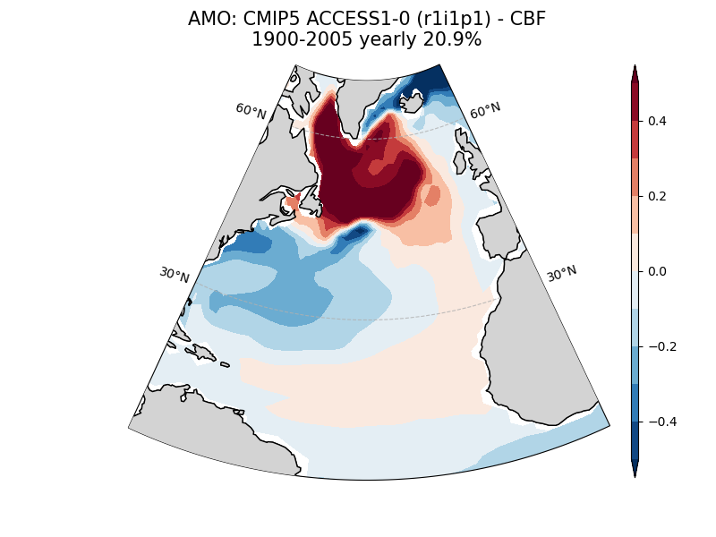
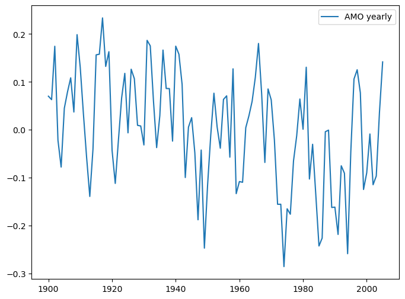

4. Modes of Variability#


Authors Jiwoo Lee, Ana Ordonez (Lawrence Livermore National Laboratory)
Reference - Lee, J., K. Sperber, P. Gleckler, C. Bonfils, and K. Taylor, 2019: Quantifying the Agreement Between Observed and Simulated Extratropical Modes of Interannual Variability. Climate Dynamics, 52, 4057-4089, https://doi.org/10.1007/s00382-018-4355-4 - Lee, J., K. Sperber, P. Gleckler, K. Taylor, and C. Bonfils, 2021: Benchmarking performance changes in the simulation of extratropical modes of variability across CMIP generations. Journal of Climate, 34, 6945–6969, https://doi.org/10.1175/JCLI-D-20-0832.1 —
Table of Contents - 1. Environment - 2. Usage - 3. Example * 3.1 Atmospheric mode: NAM - 3.1.1 Run metrics - 3.1.2 Customize Observation Settings - 3.1.3 Customize Model Settings - 3.1.4 Customize Analysis Settings - 3.1.5 Results * 3.2 SST-based mode: PDO - 3.2.1 Run Metircs - 3.2.2 Results * 3.3 SST-based mode: AMO - 3.3.1 Run Metircs - 3.3.2 Results
NOTE
The installation instruction for the PMP can be found here.
More information can be found in the README. Additional example parameter files are archived in the PMP sample setups.
It is expected that the user has run the Demo_0_download_data notebook to obtain the sample data and generate parameter files. This first cell loads the demo directory choices made in Demo_0_download_data.
[1]:
from user_choices import demo_data_directory, demo_output_directory
[2]:
# To open and display one of the graphics
from IPython.display import display_png, JSON, Image
[3]:
# For quick output check in this notebook
import xcdat as xc
import xarray as xr
import datetime
import matplotlib.pyplot as plt
1. Environment#
The modes of variability metric requires following two packages installed in your environment: eofs and scipy. They are part of the standard PMP installation, so should have been installed when you were installing the PMP. However in case somehow if they were not installed in your environment, you can edit the following cell to install them in your environment from this jupyter notebook kernel. Delete the triple quotations from lines 2&5 to install with conda:
[4]:
# for conda
"""
import sys
!conda install --yes --prefix {sys.prefix} -c conda-forge eofs scipy
"""
[4]:
'\nimport sys\n!conda install --yes --prefix {sys.prefix} -c conda-forge eofs scipy\n'
OR delete the triple quotations on lines 2&5 from this cell to install with pip:
[5]:
# for pip
"""
import sys
!{sys.executable} -m pip install eofs scipy
"""
[5]:
'\nimport sys\n!{sys.executable} -m pip install eofs scipy\n'
2. Usage#
Modes of variability can be run on the command line or with using a parameter file
For help, type:
variability_modes_driver.py --help
[6]:
%%bash
variability_modes_driver.py --help
usage: variability_modes_driver.py [-h] [--parameters PARAMETERS]
[--diags OTHER_PARAMETERS [OTHER_PARAMETERS ...]]
[--results_dir RESULTS_DIR]
[--reference_data_path REFERENCE_DATA_PATH]
[--modpath MODPATH] [--mip MIP] [--exp EXP]
[--frequency FREQUENCY] [--realm REALM]
[--reference_data_name REFERENCE_DATA_NAME]
[-v VARIABILITY_MODE]
[--seasons SEASONS [SEASONS ...]]
[--modnames MODNAMES [MODNAMES ...]]
[-r REALIZATION] [--modpath_lf MODPATH_LF]
[--varOBS VAROBS] [--varModel VARMODEL]
[--eofn_obs EOFN_OBS] [--eofn_mod EOFN_MOD]
[--osyear OSYEAR] [--oeyear OEYEAR]
[--msyear MSYEAR] [--meyear MEYEAR]
[--ObsUnitsAdjust OBSUNITSADJUST]
[--ModUnitsAdjust MODUNITSADJUST]
[--case_id CASE_ID] [-d DEBUG]
[--RemoveDomainMean REMOVEDOMAINMEAN]
[--EofScaling EOFSCALING]
[--landmask LANDMASK] [--ConvEOF CONVEOF]
[--CBF CBF] [--nc_out NC_OUT] [--plot PLOT]
[--nc_out_obs NC_OUT_OBS]
[--plot_obs PLOT_OBS] [--parallel PARALLEL]
[--no_nc_out_obs] [--no_plot_obs]
[--update_json UPDATE_JSON] [--cmec]
[--no_cmec]
Runs PCMDI Modes of Variability Computations
options:
-h, --help show this help message and exit
--parameters PARAMETERS, -p PARAMETERS
--diags OTHER_PARAMETERS [OTHER_PARAMETERS ...]
Path to other user-defined parameter file.
--results_dir RESULTS_DIR, --rd RESULTS_DIR
The name of the folder where all runs will be stored.
--reference_data_path REFERENCE_DATA_PATH, --rdp REFERENCE_DATA_PATH
The path/filename of reference (obs) data.
--modpath MODPATH, --mp MODPATH
Explicit path to model data
--mip MIP A WCRP MIP project such as CMIP3 and CMIP5
--exp EXP An experiment such as amip, historical or piContorl
--frequency FREQUENCY
--realm REALM
--reference_data_name REFERENCE_DATA_NAME
Name of reference data set
-v VARIABILITY_MODE, --variability_mode VARIABILITY_MODE
Mode of variability: NAM, NAO, SAM, PNA, PDO, NPO, NPGO, AMO
- NAM: Northern Annular Mode
- NAO: Northern Atlantic Oscillation
- SAM: Southern Annular Mode
- PNA: Pacific North American Pattern
- PDO: Pacific Decadal Oscillation
- NPO: North Pacific Oscillation
- NPGO: North Pacific Gyre Oscillation
- AMO: Atlantic Multidecadal Oscillation
(Note: Case insensitive)
--seasons SEASONS [SEASONS ...]
List of seasons
--modnames MODNAMES [MODNAMES ...]
List of models. 'all' for every available models
-r REALIZATION, --realization REALIZATION
Consider all accessible realizations as idividual
- r1i1p1: default, consider only 'r1i1p1' member
Or, specify realization, e.g, r3i1p1'
- *: consider all available realizations
--modpath_lf MODPATH_LF
Directory path to model land fraction field
--varOBS VAROBS Name of variable in reference data
--varModel VARMODEL Name of variable in model(s)
--eofn_obs EOFN_OBS EOF mode from observation as reference
--eofn_mod EOFN_MOD EOF mode from model
--osyear OSYEAR Start year for reference data
--oeyear OEYEAR End year for reference data
--msyear MSYEAR Start year for model(s)
--meyear MEYEAR End year for model(s)
--ObsUnitsAdjust OBSUNITSADJUST
For unit adjust for OBS dataset. For example:
- (True, 'divide', 100.0) # Pa to hPa
- (True, 'subtract', 273.15) # degK to degC
- (False, 0, 0) # No adjustment (default)
--ModUnitsAdjust MODUNITSADJUST
For unit adjust for model dataset. For example:
- (True, 'divide', 100.0) # Pa to hPa
- (True, 'subtract', 273.15) # degK to degC
- (False, 0, 0) # No adjustment (default)
--case_id CASE_ID version as date, e.g., v20191116 (yyyy-mm-dd)
-d DEBUG, --debug DEBUG
Option for debug: True / False (defualt)
--RemoveDomainMean REMOVEDOMAINMEAN
Option for Remove Domain Mean from each time step: True (defualt)/ False
--EofScaling EOFSCALING
Option for Consider EOF with unit variance: True / False (default)
--landmask LANDMASK Option for maskout land region: True / False (default)
--ConvEOF CONVEOF Option for Calculate Conventioanl EOF for model: True / False (default)
--CBF CBF Option for Calculate Common Basis Function (CBF) for model: True (default) / False
--nc_out NC_OUT Option for generate netCDF file output for models: True (default) / False
--plot PLOT Option for generate individual plots for models: True (default) / False
--nc_out_obs NC_OUT_OBS
Option for generate netCDF file output for obs: True (default) / False
--plot_obs PLOT_OBS Option for generate individual plots for obs: True (default) / False
--parallel PARALLEL Option for running code in parallel mode: True / False (default)
--no_nc_out_obs Turn off netCDF generating for obs
--no_plot_obs Turn off plot generating for obs
--update_json UPDATE_JSON
Option for update existing JSON file: True (i.e., update) (default) / False (i.e., overwrite)
--cmec Save metrics in CMEC format
--no_cmec Option to not save metrics in CMEC format
3. Example#
3.1 Atmospheric mode: NAM#
3.1.1 Run metrics#
This example uses settings from the “basic_mov_param.py” parameter file to run the metrics for the NAM (Northern Annular Mode) in DJF. The input data for this mode of variability is monthly sea level pressure.
The below process could take about 4 minutes.
[7]:
%%bash
variability_modes_driver.py -p basic_mov_param.py --case_id "mov_1"
mip: cmip5
exp: historical
fq: mo
realm: atm
EofScaling: False
RmDomainMean: True
LandMask: False
nc_out_obs, plot_obs: True True
nc_out_model, plot_model: True True
CMEC:False
mode: NAM
seasons: ['DJF']
models: ['ACCESS1-0']
number of models: 1
realization: r1i1p1
eofn_obs: 1
eofn_mod: 1
parallel: False
output directories:
graphics : demo_output/mov_1
diagnostic_results : demo_output/mov_1
metrics_results : demo_output/mov_1
Converting units by divide 100.0
----- ACCESS1-0 ---------------------
model_path: demo_data/CMIP5_demo_data/psl_Amon_ACCESS1-0_historical_r1i1p1_185001-200512.nc
--- r1i1p1 ---
model_lf_path: None
Converting units by divide 100.0
INFO::2024-04-25 23:56::pcmdi_metrics:: Results saved to a json file: /Users/lee1043/Documents/Research/git/pcmdi_metrics_20230620_pcmdi/pcmdi_metrics/doc/jupyter/Demo/demo_output/mov_1/var_mode_NAM_EOF1_stat_cmip5_historical_mo_atm_ACCESS1-0_r1i1p1_1900-2005.json
2024-04-25 23:56:24,227 [INFO]: base.py(write:251) >> Results saved to a json file: /Users/lee1043/Documents/Research/git/pcmdi_metrics_20230620_pcmdi/pcmdi_metrics/doc/jupyter/Demo/demo_output/mov_1/var_mode_NAM_EOF1_stat_cmip5_historical_mo_atm_ACCESS1-0_r1i1p1_1900-2005.json
2024-04-25 23:56:24,227 [INFO]: base.py(write:251) >> Results saved to a json file: /Users/lee1043/Documents/Research/git/pcmdi_metrics_20230620_pcmdi/pcmdi_metrics/doc/jupyter/Demo/demo_output/mov_1/var_mode_NAM_EOF1_stat_cmip5_historical_mo_atm_ACCESS1-0_r1i1p1_1900-2005.json
3.1.2 Customize Observation Settings#
Options given in the basic_mov_param.py file can be overriden by options given from the command line.
For example, below is for settings for observations from basic_mov_param.py:
varOBS = 'psl'
ObsUnitsAdjust = (True, 'divide', 100.0) # Pa to hPa; or (False, 0, 0)
osyear = 1900
oeyear = 2005
eofn_obs = 1
If you want to adjust observation starting year (osyear) to 1980 and assign new case_id as “mov_2”:
The below process could take about 4 minutes.
[8]:
%%bash
variability_modes_driver.py -p basic_mov_param.py --case_id "mov_2" --osyear 1980
mip: cmip5
exp: historical
fq: mo
realm: atm
EofScaling: False
RmDomainMean: True
LandMask: False
nc_out_obs, plot_obs: True True
nc_out_model, plot_model: True True
CMEC:False
mode: NAM
seasons: ['DJF']
models: ['ACCESS1-0']
number of models: 1
realization: r1i1p1
eofn_obs: 1
eofn_mod: 1
parallel: False
output directories:
graphics : demo_output/mov_2
diagnostic_results : demo_output/mov_2
metrics_results : demo_output/mov_2
Converting units by divide 100.0
----- ACCESS1-0 ---------------------
model_path: demo_data/CMIP5_demo_data/psl_Amon_ACCESS1-0_historical_r1i1p1_185001-200512.nc
--- r1i1p1 ---
model_lf_path: None
Converting units by divide 100.0
INFO::2024-04-25 23:57::pcmdi_metrics:: Results saved to a json file: /Users/lee1043/Documents/Research/git/pcmdi_metrics_20230620_pcmdi/pcmdi_metrics/doc/jupyter/Demo/demo_output/mov_2/var_mode_NAM_EOF1_stat_cmip5_historical_mo_atm_ACCESS1-0_r1i1p1_1900-2005.json
2024-04-25 23:57:29,916 [INFO]: base.py(write:251) >> Results saved to a json file: /Users/lee1043/Documents/Research/git/pcmdi_metrics_20230620_pcmdi/pcmdi_metrics/doc/jupyter/Demo/demo_output/mov_2/var_mode_NAM_EOF1_stat_cmip5_historical_mo_atm_ACCESS1-0_r1i1p1_1900-2005.json
2024-04-25 23:57:29,916 [INFO]: base.py(write:251) >> Results saved to a json file: /Users/lee1043/Documents/Research/git/pcmdi_metrics_20230620_pcmdi/pcmdi_metrics/doc/jupyter/Demo/demo_output/mov_2/var_mode_NAM_EOF1_stat_cmip5_historical_mo_atm_ACCESS1-0_r1i1p1_1900-2005.json
3.1.3 Customize Model Settings#
Similarly, options for models can be also adjusted from command line.
The below process could take about 4 minutes.
[9]:
%%bash
variability_modes_driver.py -p basic_mov_param.py --case_id "mov_3" --msyear 1950 --meyear 2005
mip: cmip5
exp: historical
fq: mo
realm: atm
EofScaling: False
RmDomainMean: True
LandMask: False
nc_out_obs, plot_obs: True True
nc_out_model, plot_model: True True
CMEC:False
mode: NAM
seasons: ['DJF']
models: ['ACCESS1-0']
number of models: 1
realization: r1i1p1
eofn_obs: 1
eofn_mod: 1
parallel: False
output directories:
graphics : demo_output/mov_3
diagnostic_results : demo_output/mov_3
metrics_results : demo_output/mov_3
Converting units by divide 100.0
----- ACCESS1-0 ---------------------
model_path: demo_data/CMIP5_demo_data/psl_Amon_ACCESS1-0_historical_r1i1p1_185001-200512.nc
--- r1i1p1 ---
model_lf_path: None
Converting units by divide 100.0
INFO::2024-04-25 23:58::pcmdi_metrics:: Results saved to a json file: /Users/lee1043/Documents/Research/git/pcmdi_metrics_20230620_pcmdi/pcmdi_metrics/doc/jupyter/Demo/demo_output/mov_3/var_mode_NAM_EOF1_stat_cmip5_historical_mo_atm_ACCESS1-0_r1i1p1_1950-2005.json
2024-04-25 23:58:31,584 [INFO]: base.py(write:251) >> Results saved to a json file: /Users/lee1043/Documents/Research/git/pcmdi_metrics_20230620_pcmdi/pcmdi_metrics/doc/jupyter/Demo/demo_output/mov_3/var_mode_NAM_EOF1_stat_cmip5_historical_mo_atm_ACCESS1-0_r1i1p1_1950-2005.json
2024-04-25 23:58:31,584 [INFO]: base.py(write:251) >> Results saved to a json file: /Users/lee1043/Documents/Research/git/pcmdi_metrics_20230620_pcmdi/pcmdi_metrics/doc/jupyter/Demo/demo_output/mov_3/var_mode_NAM_EOF1_stat_cmip5_historical_mo_atm_ACCESS1-0_r1i1p1_1950-2005.json
3.1.4 Customize Analysis Settings#
Similarly, options for analysis can be also adjusted from command line. Below example applies a custom season (Jan-Feb-Mar)
The below process could take about 4 minutes.
[10]:
%%bash
variability_modes_driver.py -p basic_mov_param.py --case_id "mov_4" --seasons "JFM"
mip: cmip5
exp: historical
fq: mo
realm: atm
EofScaling: False
RmDomainMean: True
LandMask: False
nc_out_obs, plot_obs: True True
nc_out_model, plot_model: True True
CMEC:False
mode: NAM
seasons: ['JFM']
models: ['ACCESS1-0']
number of models: 1
realization: r1i1p1
eofn_obs: 1
eofn_mod: 1
parallel: False
output directories:
graphics : demo_output/mov_4
diagnostic_results : demo_output/mov_4
metrics_results : demo_output/mov_4
Converting units by divide 100.0
----- ACCESS1-0 ---------------------
model_path: demo_data/CMIP5_demo_data/psl_Amon_ACCESS1-0_historical_r1i1p1_185001-200512.nc
--- r1i1p1 ---
model_lf_path: None
Converting units by divide 100.0
INFO::2024-04-25 23:59::pcmdi_metrics:: Results saved to a json file: /Users/lee1043/Documents/Research/git/pcmdi_metrics_20230620_pcmdi/pcmdi_metrics/doc/jupyter/Demo/demo_output/mov_4/var_mode_NAM_EOF1_stat_cmip5_historical_mo_atm_ACCESS1-0_r1i1p1_1900-2005.json
2024-04-25 23:59:34,684 [INFO]: base.py(write:251) >> Results saved to a json file: /Users/lee1043/Documents/Research/git/pcmdi_metrics_20230620_pcmdi/pcmdi_metrics/doc/jupyter/Demo/demo_output/mov_4/var_mode_NAM_EOF1_stat_cmip5_historical_mo_atm_ACCESS1-0_r1i1p1_1900-2005.json
2024-04-25 23:59:34,684 [INFO]: base.py(write:251) >> Results saved to a json file: /Users/lee1043/Documents/Research/git/pcmdi_metrics_20230620_pcmdi/pcmdi_metrics/doc/jupyter/Demo/demo_output/mov_4/var_mode_NAM_EOF1_stat_cmip5_historical_mo_atm_ACCESS1-0_r1i1p1_1900-2005.json
3.1.5 Results#
Results are generated in three different types: maps in image (PNG), maps and time series in binary (netCDF), and metrics in text (JSON).
By the default setting, metrics code generates outputs for CBF (Common Basis Function), EOF1, EOF2, and EOF3.
Graphic images (PNG)#
Graphics are saved in along with other results in a folder with the case_id name. Here we list the images available from the Basic Example and display the CBF plot.
[11]:
!ls {demo_output_directory + "/mov_1/*.png"}
demo_output/mov_1/EG_Spec_North_test_NAM_DJF_NOAA-20CR_1900-2005.png
demo_output/mov_1/NAM_psl_EOF1_DJF_cmip5_ACCESS1-0_historical_r1i1p1_mo_atm_1900-2005.png
demo_output/mov_1/NAM_psl_EOF1_DJF_cmip5_ACCESS1-0_historical_r1i1p1_mo_atm_1900-2005_cbf.png
demo_output/mov_1/NAM_psl_EOF1_DJF_cmip5_ACCESS1-0_historical_r1i1p1_mo_atm_1900-2005_cbf_teleconnection.png
demo_output/mov_1/NAM_psl_EOF1_DJF_cmip5_ACCESS1-0_historical_r1i1p1_mo_atm_1900-2005_teleconnection.png
demo_output/mov_1/NAM_psl_EOF1_DJF_obs_1900-2005.png
demo_output/mov_1/NAM_psl_EOF1_DJF_obs_1900-2005_teleconnection.png
demo_output/mov_1/NAM_psl_EOF2_DJF_cmip5_ACCESS1-0_historical_r1i1p1_mo_atm_1900-2005.png
demo_output/mov_1/NAM_psl_EOF2_DJF_cmip5_ACCESS1-0_historical_r1i1p1_mo_atm_1900-2005_teleconnection.png
demo_output/mov_1/NAM_psl_EOF3_DJF_cmip5_ACCESS1-0_historical_r1i1p1_mo_atm_1900-2005.png
demo_output/mov_1/NAM_psl_EOF3_DJF_cmip5_ACCESS1-0_historical_r1i1p1_mo_atm_1900-2005_teleconnection.png
[12]:
image_path1 = demo_output_directory + "/mov_1/NAM_psl_EOF1_DJF_obs_1900-2005.png"
image_path2 = demo_output_directory + "/mov_1/NAM_psl_EOF1_DJF_cmip5_ACCESS1-0_historical_r1i1p1_mo_atm_1900-2005_cbf.png"
[13]:
a = Image(image_path1)
b = Image(image_path2)
display_png(a, b)


Above figure: Simulated NAM obtained from the reference dataset (NOAA-20CR) [top] and ACCESS1-0 model using the Common Basis Function (CBF) approach [bottom]. Percent of variance (%) explained by the simulated mode is noted at the top.
Binary (NetCDF)#
NetCDF files include spatial patterns for aforementioned maps and associated PC timeseries. The ncdump utility is used to get a summary of the netCDF results from the Basic Example.
[14]:
!ls {demo_output_directory + "/mov_1/*.nc"}
demo_output/mov_1/NAM_psl_EOF1_DJF_cmip5_ACCESS1-0_historical_r1i1p1_mo_atm_1900-2005.nc
demo_output/mov_1/NAM_psl_EOF1_DJF_cmip5_ACCESS1-0_historical_r1i1p1_mo_atm_1900-2005_cbf.nc
demo_output/mov_1/NAM_psl_EOF1_DJF_obs_1900-2005.nc
demo_output/mov_1/NAM_psl_EOF2_DJF_cmip5_ACCESS1-0_historical_r1i1p1_mo_atm_1900-2005.nc
demo_output/mov_1/NAM_psl_EOF3_DJF_cmip5_ACCESS1-0_historical_r1i1p1_mo_atm_1900-2005.nc
[15]:
!ncdump -h {demo_output_directory + "/mov_1_xcdat_test/NAM_psl_EOF1_DJF_cmip5_ACCESS1-0_historical_r1i1p1_mo_atm_1900-2005_cbf.nc"}
ncdump: demo_output/mov_1_xcdat_test/NAM_psl_EOF1_DJF_cmip5_ACCESS1-0_historical_r1i1p1_mo_atm_1900-2005_cbf.nc: No such file or directory
Metrics (JSON)#
Finally, we list the JSON metrics files from the Basic Example and look inside one of these JSONS.
[16]:
!ls {demo_output_directory + "/mov_1/*.json"}
demo_output/mov_1/var_mode_NAM_EOF1_stat_cmip5_historical_mo_atm_ACCESS1-0_r1i1p1_1900-2005.json
[17]:
import json
with open(demo_output_directory+"/mov_1/var_mode_NAM_EOF1_stat_cmip5_historical_mo_atm_ACCESS1-0_r1i1p1_1900-2005.json") as fj:
metrics = json.load(fj)["RESULTS"]
print(json.dumps(metrics, indent=2))
{
"ACCESS1-0": {
"r1i1p1": {
"defaultReference": {
"NAM": {
"DJF": {
"best_matching_model_eofs__cor": 1,
"best_matching_model_eofs__rms": 1,
"best_matching_model_eofs__tcor_cbf_vs_eof_pc": 1,
"cbf": {
"bias": 0.0019044281861121284,
"bias_glo": -0.03891111135146606,
"cor": 0.9709328398320543,
"cor_glo": 0.9570975956518156,
"frac": 0.1950877865109733,
"frac_cbf_regrid": 0.17504452457129152,
"mean": -1.0337522840718537e-16,
"mean_glo": 0.07401741603299603,
"rms": 0.46008286687553535,
"rms_glo": 0.29777124409904016,
"rmsc": 0.24111058902821234,
"rmsc_glo": 0.29292458666028276,
"stdv_pc": 1.1509405078627246,
"stdv_pc_ratio_to_obs": 0.7606443647679552
},
"eof1": {
"bias": 0.0015488728262606744,
"bias_glo": -0.08079053829357438,
"cor": 0.9179624925437282,
"cor_glo": 0.9063128921751368,
"frac": 0.20172274352185515,
"mean": -9.140516150177582e-17,
"mean_glo": 0.03213798665602856,
"rms": 0.6276677448861573,
"rms_glo": 0.3957327059656811,
"rmsc": 0.4050617618325403,
"rmsc_glo": 0.4328674380302343,
"stdv_pc": 1.2128417103835378,
"stdv_pc_ratio_to_obs": 0.8015542124517874,
"tcor_cbf_vs_eof_pc": 0.9613697546789467
},
"eof2": {
"bias": 0.003573484649187188,
"bias_glo": 0.11643407018372984,
"cor": 0.006278426543692597,
"cor_glo": 0.026339224115358776,
"frac": 0.1548357820381815,
"mean": -7.835634639814585e-16,
"mean_glo": 0.22936257903366086,
"rms": 1.840047231291729,
"rms_glo": 1.1006751736812366,
"rmsc": 1.409767080121382,
"rmsc_glo": 1.3954646344323984,
"stdv_pc": 1.0625817611460813,
"stdv_pc_ratio_to_obs": 0.7022490069637706,
"tcor_cbf_vs_eof_pc": 0.005767068941911034
},
"eof3": {
"bias": 0.0019053609593851484,
"bias_glo": 0.07853514537562283,
"cor": 0.23745310037782066,
"cor_glo": 0.2383464779138652,
"frac": 0.13523636586724416,
"mean": -6.769289161518386e-16,
"mean_glo": 0.19146366645049298,
"rms": 1.598133832382019,
"rms_glo": 0.9520406706948417,
"rmsc": 1.234946876237284,
"rmsc_glo": 1.2342232268509366,
"stdv_pc": 0.9930553077208459,
"stdv_pc_ratio_to_obs": 0.6562997118968924,
"tcor_cbf_vs_eof_pc": 0.20355584321425021
},
"period": "1900-2005"
},
"target_model_eofs": 1
}
}
}
}
}
3.2 SST-based mode: PDO#
3.2.1 Run Metircs#
The below process could take about 6 minutes.
[18]:
%%bash
variability_modes_driver.py -p basic_mov_param_sst.py --case_id "PDO" --msyear 1900 --meyear 2005
mip: cmip5
exp: historical
fq: mo
realm: atm
EofScaling: False
RmDomainMean: True
LandMask: True
nc_out_obs, plot_obs: True True
nc_out_model, plot_model: True True
CMEC:False
mode: PDO
seasons: ['monthly']
models: ['ACCESS1-0']
number of models: 1
realization: r1i1p1
eofn_obs: 1
eofn_mod: 1
parallel: False
output directories:
graphics : demo_output/PDO
diagnostic_results : demo_output/PDO
metrics_results : demo_output/PDO
Converting units by subtract 273.15
/Users/lee1043/mambaforge/envs/pmp_devel_20240425/lib/python3.10/site-packages/pcmdi_metrics/utils/land_sea_mask.py:207: UserWarning: landfrac is not provided thus generated using the 'create_land_sea_mask' function
warnings.warn(
----- ACCESS1-0 ---------------------
model_path: demo_data/CMIP5_demo_data/ts_Amon_ACCESS1-0_historical_r1i1p1_185001-200512.nc
--- r1i1p1 ---
model_lf_path: demo_data/CMIP5_demo_data/sftlf_fx_ACCESS1-0_amip_r0i0p0.nc
Converting units by subtract 273.15
2024-04-26 00:00:08,002 [WARNING]: dataset.py(open_dataset:120) >> "No time coordinates were found in this dataset to decode. If time coordinates were expected to exist, make sure they are detectable by setting the CF 'axis' or 'standard_name' attribute (e.g., ds['time'].attrs['axis'] = 'T' or ds['time'].attrs['standard_name'] = 'time'). Afterwards, try decoding again with `xcdat.decode_time`."
2024-04-26 00:00:08,002 [WARNING]: dataset.py(open_dataset:120) >> "No time coordinates were found in this dataset to decode. If time coordinates were expected to exist, make sure they are detectable by setting the CF 'axis' or 'standard_name' attribute (e.g., ds['time'].attrs['axis'] = 'T' or ds['time'].attrs['standard_name'] = 'time'). Afterwards, try decoding again with `xcdat.decode_time`."
/Users/lee1043/mambaforge/envs/pmp_devel_20240425/lib/python3.10/site-packages/xarray/core/nputils.py:234: RuntimeWarning: Degrees of freedom <= 0 for slice.
result = getattr(npmodule, name)(values, axis=axis, **kwargs)
/Users/lee1043/mambaforge/envs/pmp_devel_20240425/lib/python3.10/site-packages/xarray/core/nputils.py:234: RuntimeWarning: Degrees of freedom <= 0 for slice.
result = getattr(npmodule, name)(values, axis=axis, **kwargs)
/Users/lee1043/mambaforge/envs/pmp_devel_20240425/lib/python3.10/site-packages/xarray/core/nputils.py:234: RuntimeWarning: Degrees of freedom <= 0 for slice.
result = getattr(npmodule, name)(values, axis=axis, **kwargs)
INFO::2024-04-26 00:01::pcmdi_metrics:: Results saved to a json file: /Users/lee1043/Documents/Research/git/pcmdi_metrics_20230620_pcmdi/pcmdi_metrics/doc/jupyter/Demo/demo_output/PDO/var_mode_PDO_EOF1_stat_cmip5_historical_mo_atm_ACCESS1-0_r1i1p1_1900-2005.json
2024-04-26 00:01:05,168 [INFO]: base.py(write:251) >> Results saved to a json file: /Users/lee1043/Documents/Research/git/pcmdi_metrics_20230620_pcmdi/pcmdi_metrics/doc/jupyter/Demo/demo_output/PDO/var_mode_PDO_EOF1_stat_cmip5_historical_mo_atm_ACCESS1-0_r1i1p1_1900-2005.json
2024-04-26 00:01:05,168 [INFO]: base.py(write:251) >> Results saved to a json file: /Users/lee1043/Documents/Research/git/pcmdi_metrics_20230620_pcmdi/pcmdi_metrics/doc/jupyter/Demo/demo_output/PDO/var_mode_PDO_EOF1_stat_cmip5_historical_mo_atm_ACCESS1-0_r1i1p1_1900-2005.json
3.2.2 Results#
[19]:
image_path1 = demo_output_directory + "/PDO/PDO_ts_EOF1_monthly_obs_1900-2005.png"
image_path2 = demo_output_directory + "/PDO/PDO_ts_EOF1_monthly_cmip5_ACCESS1-0_historical_r1i1p1_mo_atm_1900-2005_cbf.png"
image_path3 = demo_output_directory + "/PDO/PDO_ts_EOF1_monthly_cmip5_ACCESS1-0_historical_r1i1p1_mo_atm_1900-2005.png"
[20]:
a = Image(image_path1)
b = Image(image_path2)
c = Image(image_path3)
display_png(a, b, c)



Above figure: PDO pattern obtained from the reference dataset (HadISST-1-1) [top], ACCESS1-0 model using the CBF [middle] and traditional EOF approach [bottom]. Percent of variance (%) explained by the simulated mode is noted at the top.
Quick analysis: Comparison between CBF and traditional EOF approaches#
[21]:
ncfilename = demo_output_directory + "/PDO/PDO_ts_EOF1_monthly_cmip5_ACCESS1-0_historical_r1i1p1_mo_atm_1900-2005_cbf.nc"
[22]:
ncfilename2 = demo_output_directory + "/PDO/PDO_ts_EOF1_monthly_cmip5_ACCESS1-0_historical_r1i1p1_mo_atm_1900-2005.nc"
[23]:
ds1 = xc.open_dataset(ncfilename)
ds2 = xc.open_dataset(ncfilename2)
[24]:
ds1
[24]:
<xarray.Dataset> Size: 697kB
Dimensions: (time: 1272, lat: 145, lon: 192, bnds: 2)
Coordinates:
mode int64 8B 0
* lat (lat) float64 1kB -90.0 -88.75 -87.5 -86.25 ... 87.5 88.75 90.0
* lon (lon) float64 2kB 0.0 1.875 3.75 5.625 ... 354.4 356.2 358.1
* time (time) object 10kB 1900-01-16 12:00:00 ... 2005-12-16 12:00:00
Dimensions without coordinates: bnds
Data variables:
pc (time) float64 10kB ...
eof (lat, lon) float64 223kB ...
slope (lat, lon) float64 223kB ...
intercept (lat, lon) float64 223kB ...
frac float64 8B ...
lon_bnds (lon, bnds) float64 3kB -0.9375 0.9375 0.9375 ... 357.2 359.1
lat_bnds (lat, bnds) float64 2kB -90.0 -89.38 -89.38 ... 89.38 89.38 90.0[25]:
date = [datetime.datetime(d.year, d.month, d.day) for d in ds1.time.values]
[26]:
fig = plt.figure(figsize=(8, 6))
plt.plot(date, ds1['pc'], label='CBF')
plt.plot(date, ds2['pc'], label='EOF1')
plt.legend()
[26]:
<matplotlib.legend.Legend at 0x1424f3130>

Temporal correlation between the two time series#
[27]:
float(xr.corr(ds1['pc'], ds2['pc']))
[27]:
0.8727176458141408
Quick check for the binary output#
Output fields from Reference data and model#
[28]:
ds_obs = xc.open_dataset(demo_output_directory + "/PDO/PDO_ts_EOF1_monthly_obs_1900-2005.nc")
ds_model = xc.open_dataset(demo_output_directory + "/PDO/PDO_ts_EOF1_monthly_cmip5_ACCESS1-0_historical_r1i1p1_mo_atm_1900-2005_cbf.nc")
[29]:
fig, (ax1, ax2) = plt.subplots(1, 2, figsize=(10, 4))
ds_obs['eof'].plot(ax=ax1)
ds_model['eof'].plot(ax=ax2)
fig.tight_layout()

3.3 SST-based mode: AMO#
3.3.1 Run Metrics#
Above default AMO calculation was done for monthly interval. To get smoothed result, below is repeating the AMO calculation but with yearly averaged.
The below process could take about 7 minutes.
[30]:
%%bash
variability_modes_driver.py -p basic_mov_param_sst.py --variability_mode "AMO" --case_id "AMO" --msyear 1900 --meyear 2005 --seasons yearly
mip: cmip5
exp: historical
fq: mo
realm: atm
EofScaling: False
RmDomainMean: True
LandMask: True
nc_out_obs, plot_obs: True True
nc_out_model, plot_model: True True
CMEC:False
mode: AMO
seasons: ['yearly']
models: ['ACCESS1-0']
number of models: 1
realization: r1i1p1
eofn_obs: 1
eofn_mod: 1
parallel: False
output directories:
graphics : demo_output/AMO
diagnostic_results : demo_output/AMO
metrics_results : demo_output/AMO
Converting units by subtract 273.15
/Users/lee1043/mambaforge/envs/pmp_devel_20240425/lib/python3.10/site-packages/pcmdi_metrics/utils/land_sea_mask.py:207: UserWarning: landfrac is not provided thus generated using the 'create_land_sea_mask' function
warnings.warn(
----- ACCESS1-0 ---------------------
model_path: demo_data/CMIP5_demo_data/ts_Amon_ACCESS1-0_historical_r1i1p1_185001-200512.nc
--- r1i1p1 ---
model_lf_path: demo_data/CMIP5_demo_data/sftlf_fx_ACCESS1-0_amip_r0i0p0.nc
Converting units by subtract 273.15
2024-04-26 00:01:38,831 [WARNING]: dataset.py(open_dataset:120) >> "No time coordinates were found in this dataset to decode. If time coordinates were expected to exist, make sure they are detectable by setting the CF 'axis' or 'standard_name' attribute (e.g., ds['time'].attrs['axis'] = 'T' or ds['time'].attrs['standard_name'] = 'time'). Afterwards, try decoding again with `xcdat.decode_time`."
2024-04-26 00:01:38,831 [WARNING]: dataset.py(open_dataset:120) >> "No time coordinates were found in this dataset to decode. If time coordinates were expected to exist, make sure they are detectable by setting the CF 'axis' or 'standard_name' attribute (e.g., ds['time'].attrs['axis'] = 'T' or ds['time'].attrs['standard_name'] = 'time'). Afterwards, try decoding again with `xcdat.decode_time`."
/Users/lee1043/mambaforge/envs/pmp_devel_20240425/lib/python3.10/site-packages/xarray/core/nputils.py:234: RuntimeWarning: Degrees of freedom <= 0 for slice.
result = getattr(npmodule, name)(values, axis=axis, **kwargs)
/Users/lee1043/mambaforge/envs/pmp_devel_20240425/lib/python3.10/site-packages/xarray/core/nputils.py:234: RuntimeWarning: Degrees of freedom <= 0 for slice.
result = getattr(npmodule, name)(values, axis=axis, **kwargs)
/Users/lee1043/mambaforge/envs/pmp_devel_20240425/lib/python3.10/site-packages/xarray/core/nputils.py:234: RuntimeWarning: Degrees of freedom <= 0 for slice.
result = getattr(npmodule, name)(values, axis=axis, **kwargs)
INFO::2024-04-26 00:02::pcmdi_metrics:: Results saved to a json file: /Users/lee1043/Documents/Research/git/pcmdi_metrics_20230620_pcmdi/pcmdi_metrics/doc/jupyter/Demo/demo_output/AMO/var_mode_AMO_EOF1_stat_cmip5_historical_mo_atm_ACCESS1-0_r1i1p1_1900-2005.json
2024-04-26 00:02:26,070 [INFO]: base.py(write:251) >> Results saved to a json file: /Users/lee1043/Documents/Research/git/pcmdi_metrics_20230620_pcmdi/pcmdi_metrics/doc/jupyter/Demo/demo_output/AMO/var_mode_AMO_EOF1_stat_cmip5_historical_mo_atm_ACCESS1-0_r1i1p1_1900-2005.json
2024-04-26 00:02:26,070 [INFO]: base.py(write:251) >> Results saved to a json file: /Users/lee1043/Documents/Research/git/pcmdi_metrics_20230620_pcmdi/pcmdi_metrics/doc/jupyter/Demo/demo_output/AMO/var_mode_AMO_EOF1_stat_cmip5_historical_mo_atm_ACCESS1-0_r1i1p1_1900-2005.json
3.3.2 Results#
[31]:
# AMO (yearly) from the reference dataset (i.e., HadISST)
image_path1 = demo_output_directory + "/AMO/AMO_ts_EOF1_yearly_obs_1900-2005.png"
# AMO from the simulation, defined by the Common Basis Function
image_path2 = demo_output_directory + "/AMO/AMO_ts_EOF1_yearly_cmip5_ACCESS1-0_historical_r1i1p1_mo_atm_1900-2005_cbf.png"
[32]:
a = Image(image_path1)
b = Image(image_path2)
display_png(a, b)


PC time series from yearly AMO calculation#
[33]:
ncfilename = demo_output_directory + "/AMO/AMO_ts_EOF1_yearly_obs_1900-2005.nc"
[34]:
ds = xc.open_dataset(ncfilename)
[35]:
date = [datetime.datetime(d.year, d.month, d.day) for d in ds.time.values]
[36]:
fig = plt.figure(figsize=(8, 6))
plt.plot(date, ds['pc'], label='AMO yearly')
plt.legend()
[36]:
<matplotlib.legend.Legend at 0x1426abe80>

[ ]: